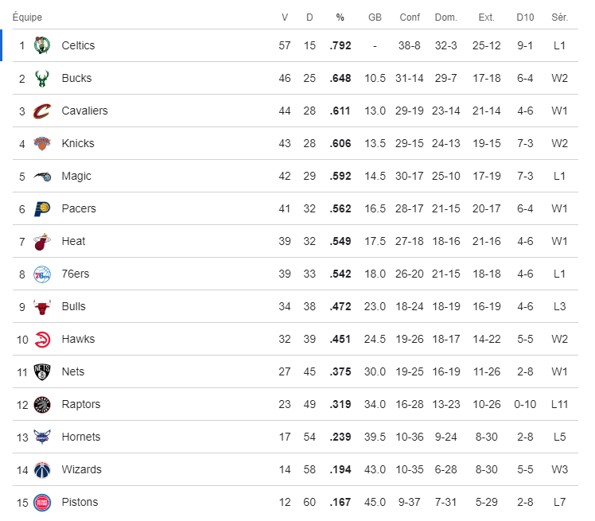
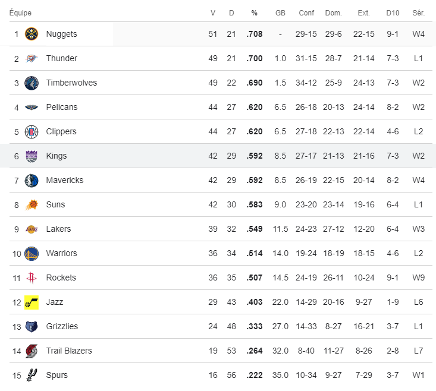
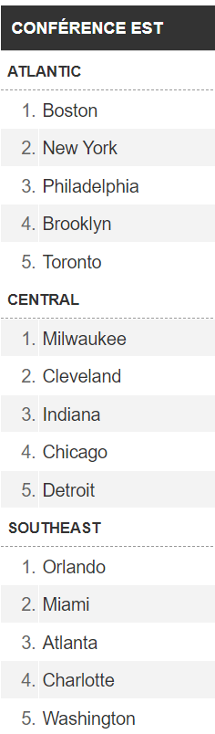
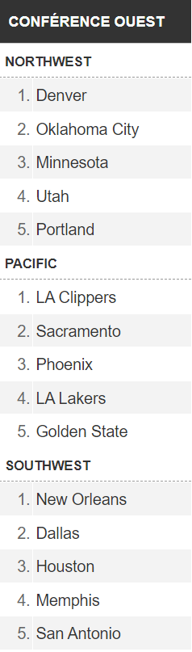
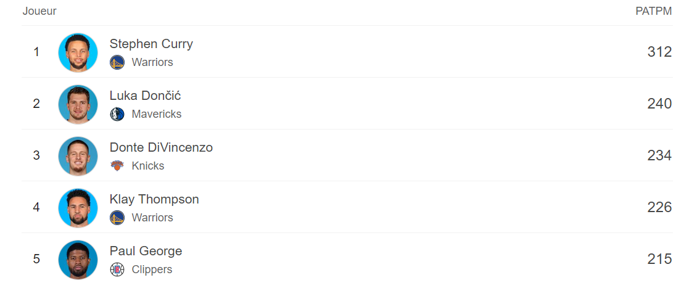
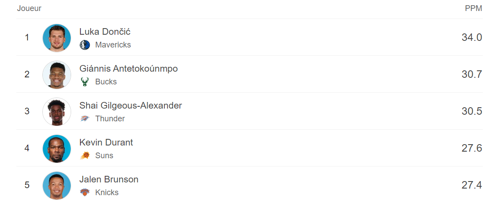
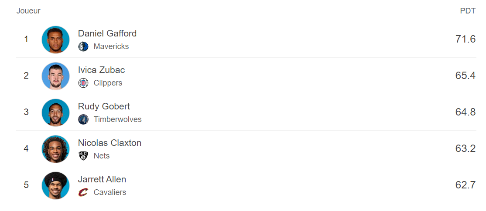
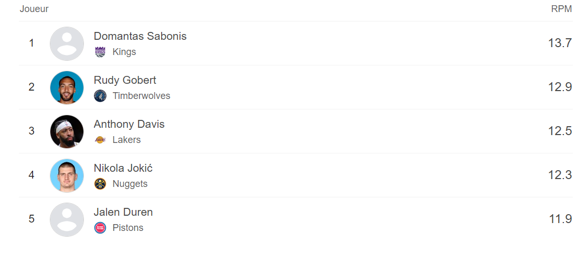
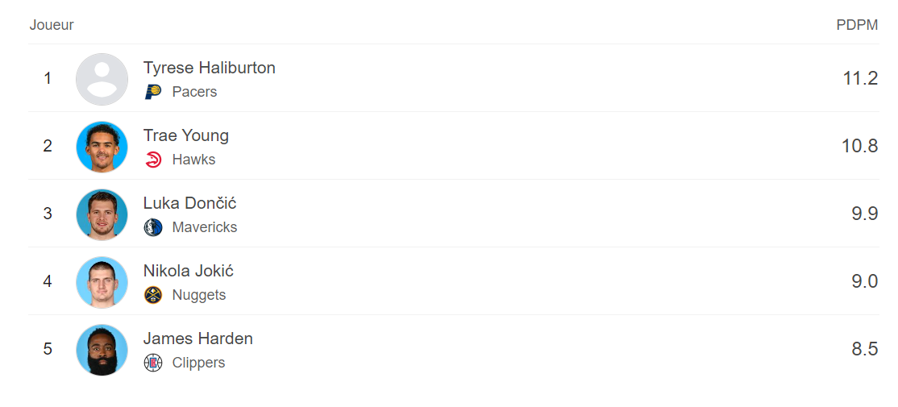

Classement
Vous trouverez sur cette page le classement des équipes NBA pour la saison 2023-2024. Deux classements sont disponibles, par conférence et par division.
Classement Est

Classement Ouest

Division Est

Division Ouest

3 points

Points par match

% au tirs

Rebond

Assist

Comment lire les stats ?
MJ = matches joués ;
Min = Minutes ;
Tirs = Tirs réussis / Tirs tentés ;
3pts = 3-points / 3-points tentés ;
LF = lancers-francs réussis / lancers-francs tentés ;
Off = rebond offensif ;
Def= rebond défensif ;
Tot = Total des rebonds ;
Pd = passes décisives ;
Fte : Fautes personnelles ;
Int = Interceptions ;
Bp = Balles perdues ;v
Ct : Contres ;
Pts = Points.